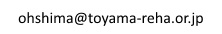

ようこそおいでくださいました
富山県リハビリテーション病院・こども支援センター
テクノエイド人材育成部
開設：２００３年５月１５日 最終更新：２０１９年７月２６日
このホームページはさまざまな不自由をもって生活する人たちとそのご家族、またこの人たちを医療や福祉の場面で支援する方々が直面するいくつかの問題に対して、工学や技術を利用して解決のお手伝いをするために作りました。ここで記されていることのほとんどが当院での取り組みが下地となっています。
しかしこの文章をお読みのみなさんが、ここに記されていることをそのまま実行されても、期待される結果を生み出さないばかりか、予想外の悪い結果がおこることも十分考えられます。あらかじめこのことをご承知いただき、ここに記載されている内容のお取り扱いには十分にご注意ください。当方はここに記載してある内容によりもたらされるいかなる結果について保証も補償もいたしません。この文章をお読みのみなさんの責任の範囲内で、参考にしていただければ幸いです。
このページから始まる一連の記載事項を許可なく転載することを禁じさせていただきます。理由はただここに記載されている内容によって起こるかも知れない、トラブルや事故を未然に防ぎたいと考えるからです。どうぞよろしくお願いいたします。その代わり、リンクされるのもはずされるのもご自由にされて結構です。
最近の更新
Web文字盤に Web 文字盤 ４ オフラインWebアプリへの道 を公開しました。（2019/7/26）
月ヶ瀬離床センサに 月ヶ瀬離床センサのメンテナンス を公開しました。（2019/7/19）
Web文字盤に Web 文字盤 ３ あいさつ文字盤とからだ文字盤を追加しました を公開しました。（2019/7/12）
車いすに 車いすメンテナンス コトハジメ３ アメリカバルブ を公開しました。（2019/06/26）
Web文字盤に Web 文字盤 ２ ワイドモニターでの見やすさを改善しました を公開しました。（2019/6/21）
その他に 機器操作支援のススメ を公開しました。（2019/06/14）
Web文字盤に Web 文字盤 １ Android の EVA Facial Mouse でも使えます を公開しました。（2019/6/7）
その他に 新しい mouse を探して 番外編 Android で EVA Facial Mouse が
エンチャント文字盤をうまくクリックできない理由と対策 を公開しました。（2019/5/24）
その他に 新しい mouse を探して 後半 インストールその３ Android を公開しました。（2019/5/17）
その他に 新しい mouse を探して 後半 インストールその２ ubuntu16.04 を公開しました。（2019/5/10）
その他に 新しい mouse を探して 後半 インストールその１ Windows10 を公開しました。（2019/4/26）
その他に 新しい mouse を探して 前半 を公開しました。（2019/4/19）
エンチャントLCの開発 を公開しました。（2019/4/12）
車いすに プラスチック部品の修理法 車いすスカートガードを修理する を公開しました。（2019/03/08）
車いすに ペルテス病の人のための車いす を公開しました。（2019/03/01）
コミュニケーションエイドに どうもこれは Chrome ではできないみたいだ オフラインで web speech API を使って任意文字列の読み上げ を公開しました。（2019/2/15）
その他に 難病コミュニケーション支援講座のご案内 を公開しました。（2019/1/25）
離床センサに 離床センサの活用事例 を公開しました。（2019/1/18）
離床センサに テープスイッチ離床センサの改善 を公開しました。（2019/1/11）
研究／発表に オフライン機能付きエンチャント文字盤の開発 を公開しました。（2018/12/26）
視線入力に 視線入力をやってわかったこと を公開しました。（2018/12/21）
視線入力に 視線入力とCameraMouse を比べてみた を公開しました。（2018/12/14）
その他に 麻痺した人がテレビを操作する方法 を公開しました。（2018/12/7）
車いすに 車いすを寄付していただきありがとうございますこんな具合に活用しています を公開しました。（2018/11/22）
エンチャントでおもちゃに ワンスイッチでどこまでできるのか を公開しました。（2018/11/16）
エンチャントでおもちゃに バナナを１ボタンでうごかそう を公開しました。（2018/11/9）
エンチャントでおもちゃに バナナを２ボタンでうごかそう を公開しました。（2018/11/2）
エンチャントでおもちゃに バナナをうごかそう を公開しました。（2018/10/26）
エンチャントでおもちゃに うごくバナナ を公開しました。（2018/10/19）
車いすに 車いすメンテナンス カイゼン５ エレベーション機能をつける を公開しました。（2018/10/12）
エンチャントでおもちゃに エンチャントでおもちゃ を公開しました。（2018/10/5）
その他に 光沢液晶を非光沢にする方法 を公開しました。（2018/9/14）
その他に ちょっとアクセス解析でも... という話 を公開しました。（2018/9/7）
その他に 呼び出しチャイム だんだんボタンが押せなくなったという話 を公開しました。（2018/8/24）
エンチャント文字盤に文書保存機能をつける を公開しました。（2018/8/10）
車いすに 整備のよくないモジュール車いす を公開しました。（2018/8/9）
視線入力に 視線入力ふたたび に動画と文章を少し公開しました。（2018/7/27）文章を追加しました。（2018/8/2）
多様なVOCAを自由自在に作る！そんなことできるのか？番外編 サンプルの作り方 を公開しました。（2018/7/20）
その他に 電子カレンダー を公開しました。（2018/7/6）
●車いす（当院の車いすの保守管理と改良の記録です）
●ナースコールスイッチ （通常のナースコールスイッチの操作が困難な方向けのスイッチです）
●コミュニケーションエイド（通常の方法では意思伝達が困難な方向けの道具です）
○Web文字盤 （html css JavaScript でコミュニケーションエイド）
- Web 文字盤 １ Android の EVA Facial Mouse でも使えます (2019/6/7 公開)
- Web 文字盤 ２ ワイドモニターでの見やすさを改善しました (2019/6/21 公開)
- Web 文字盤 ３ あいさつ文字盤とからだ文字盤を追加しました (2019/7/12 公開)
- Web 文字盤 ４ オフラインWebアプリへの道 (2019/7/26 公開)
○エンチャントでおもちゃ （enchant.jsでおとなもこどももたのしめるおもちゃつくり）
- エンチャントでおもちゃ (2018/10/5 公開)
- うごくバナナ (2018/10/19 公開)
- バナナをうごかそう (2018/10/26 公開)
- バナナを２ボタンでうごかそう (2018/11/2 公開)
- バナナを１ボタンでうごかそう (2018/11/9 公開)
- ワンスイッチでどこまでできるのか (2018/11/16 公開)
○エンチャント文字盤シリーズ （enchant.jsを利用した次世代型コミュニケーションエイド）
- エンチャント文字盤 (2016/08/18 公開)(2016/08/26 追加)(2016/09/07 追加)(次々追加)
- enchant.jsでVOCAをつくる (2016/06/16 公開)
- ペイントで kotoba1.gif をつくる (2016/06/21 公開)
- Softalk で kotoba1.mp3 をつくる (2016/06/27 公開)
- エンチャント文字盤のつくり方 第零回 (2017/06/09 公開)
- エンチャント文字盤のつくり方 第一回 (2017/06/09 公開)
- エンチャント文字盤のつくり方 第一回その２ (2017/06/16 公開)
- エンチャント文字盤のつくり方 第一回その３ (2017/06/23 公開)(2018/04/18追記)
- エンチャント文字盤のつくり方 第一回その４ (2017/06/30 公開)
- エンチャント文字盤を利用した よく見えない そんな場合の対応 (2017/07/28 公開)
- エンチャント文字盤を利用した よく見えない そんな場合の対応 その２ (2017/09/08 公開)
- エンチャント文字盤を手指運動訓練に利用した事例 (2017/09/22 公開)
- androidタブレットでエンチャント文字盤 （2018/2/9 公開）
- 実験 インターネットなしでエンチャント文字盤ができるか （2018/2/23 公開）
- エンチャント文字盤の音と声 第一回 音の役割と出す方法 （2018/3/16 公開）
- エンチャント文字盤の音と声 第二回 声の役割と出す方法 （2018/3/30 公開）
- エンチャント文字盤の音と声 第三回 WebSpeechAPIをつかうけど Can I use? （2018/4/6 公開）
- 多様なVOCAを自由自在に作る！そんなことできるのか？第１回 録音 （2018/5/25 公開）
- 多様なVOCAを自由自在に作る！そんなことできるのか？第２回 録音 その２ （2018/6/8 公開）
- 多様なVOCAを自由自在に作る！そんなことできるのか？第３回 再生 （2018/6/22 公開）
- 多様なVOCAを自由自在に作る！そんなことできるのか？番外編 サンプルの作り方 （2018/7/20 公開）
- 視線入力ふたたび （2018/7/27 公開）
- エンチャント文字盤に文書保存機能をつける （2018/8/10 公開）
- どうもこれは Chrome ではできないみたいだ オフラインで web speech API を使って任意文字列の読み上げ （2019/2/15 公開）
- エンチャントLCの開発 （2019/4/12 公開）
○しゃべる文字盤シリーズ（エクセルをつかったコミュニケーションエイド。使う人に合わせて改造できます。）
- しゃべる文字盤スキャン BASIC (2013/09/20 公開)
- しゃべる文字盤クリック with AquesTalk （2013/09/18公開）
- レッツチャット練習用 しゃべる文字盤スキャン （2012/09/11公開）
- ネットラジオ聴取、お便り投稿機能付き、しゃべる文字盤スキャン （2013/05/24公開）
○しゃべる文字盤の作り方
- 1 はじめに (2014/05/08 公開)
- 2 WindowsとExcelとVBAとしゃべる文字盤 （2014/05/08 公開）
- 3 BASICとVisualBasicとVBA プログラムについて （2014/05/08 公開）
- 4 エクセルVBA 初学者のための手引き （2014/05/08 公開）
- 5 統合開発環境 VBE （2014/05/21 公開）
- TIPS_1 セルとフォントの表示変更方法 （2014/05/28 公開）
- TIPS_2 音をならす方法 （2014/06/14 公開）
- TIPS_3 キー入力を読み取る方法 （2014/06/14 公開）
- TIPS_4 一定時間を保つ方法 （2014/07/18 公開）
- TIPS_5 合成音声でしゃべる方法 （2014/07/31 公開）
- TIPS_6 エクセルから他のアプリケーションを操作する方法 （2014/10/3 公開）
- おわりに （2014/10/3 公開）
●Tobii Eye Tracker 4C で視線入力
●目でうごかすマウス 視線入力マウスを作る
●音声認識、手作りのススメ（家庭で手軽に音声認識？ 実は可能なんです）
●離床センサ（簡単な工作でベッドからの離床を検知する工夫です）
○ 月ヶ瀬離床センサ
- はじめに
- 作り方
- 使い方（2004/12/3 追記）
- 補足事項
- 月ヶ瀬離床センサのメンテナンス （2019/07/19 公開）
○ テープスイッチ離床センサの改善 (2019/1/11公開)
○ 離床センサの活用事例 (2019/1/18公開)
●おもちゃの改造（こどもはみんなおもちゃがすきです）
●試用記
●工作入門
●その他
◎研究／発表
ご意見、ご感想をお待ちしております。メールアドレスはこちら。

上のアドレスは画像表示です。文字を読みとりメールソフトに人力で書き写してください。
迷惑メール対策のためお手間をおかけします。よろしくおねがいいたします。